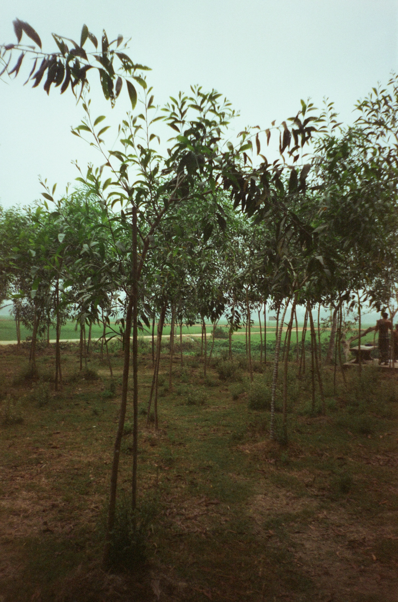
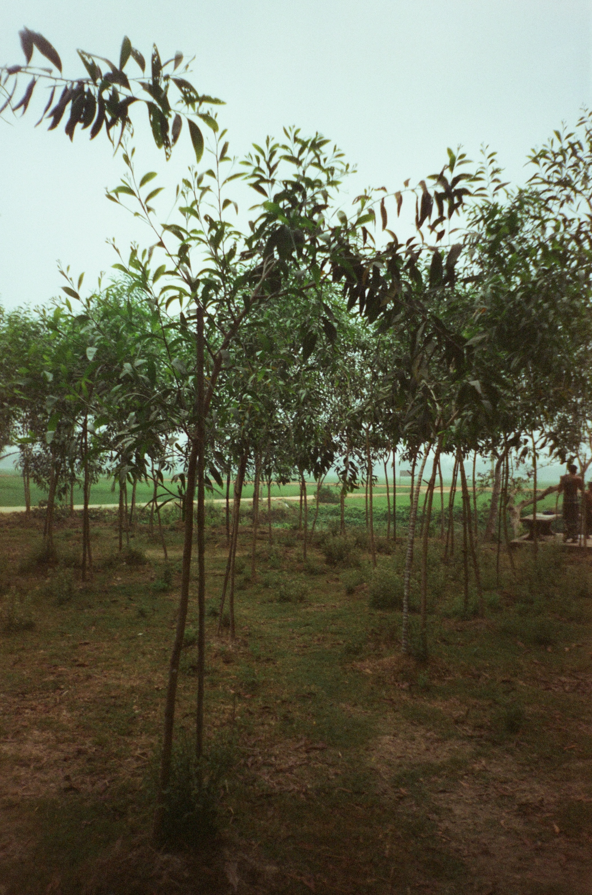

Japan
Hi, here are my pictures I have curated over the past few years. The first section includes shots from my solo trip to Japan in the summer of 2024, taken in Nagoya, Tokyo, Kyoto, Nara, Kobe, and the beautiful places in between.


Bangladesh
The second section includes my shots of Bangladesh in the Spring of 2025. I took shots in the city of Dhaka, but also the farmlands and forests of Sylhet. The journey consisted of learning how to ride a motorcycle, getting the hang of it with a cup of tea in my hand, and being inspired by the greens and riches of sweet Bangladesh.


 
